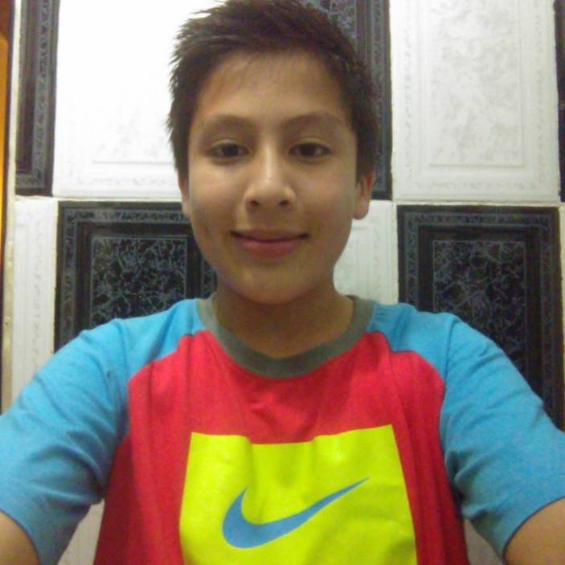
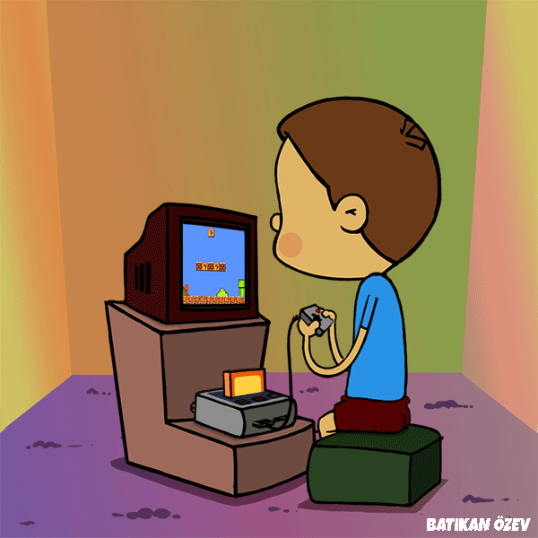
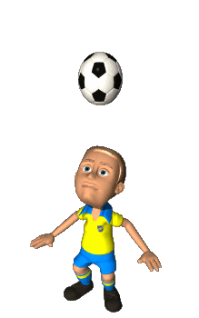
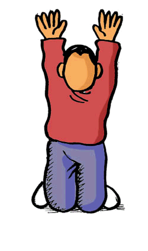

MI AUTOBIOGRAFIA
NOMBRE
Yamil Antonio Garcia Salazar

¿Quien soy?
Mi nombre es Yamil Antonio Garcia Salazar, y yo soy alumno del CBTIS No.86 que actualmente cursa la carrera de programacion, yo me considero una persona muy centrada en cuanto a lo que quiero, anque tambien tengo otras caracteriscas que me hacer ser yo, como los son; desorganizado, flojo, centrado, etc. Pero en conclusion podria decir que soy joven con muchas ganas de superarme dia a dia en lo que me gusta hacer.Espero ser una persona que ayude a los demas.
Pie de página
¿Què me gusta?
En lo particular no tengo una sola cosa por la cual me podria decantar y decir que me gusta especificamente pero pues las principales cosas que me gustan son; tener tiempo con mi familia, jugar futbol, jugar video juegos, y algunos temas de mi carrera, etc.Centralizando esas son algunas de las cosas que mas me gustan que las difruto cuando las realizo ya que avences no todo es mi agrado.
Pie de página

Mis pasatiempos favoritos
Principal mente tengo dos pasatiempos favoritos los cuales es jugar video juegos y jugar futobol, desde pequeño me atrajo mucho el futbol y desde esntonces lo juego y mas que verlo como una competencia lo veo como uan forma de convivir con mis amigos, hermanos y la gran parte de mi familia, pues los video juegos es algo mas secundario pero pues igualmente disfruto jugar mi consola.Pero busco el no desefocar mi proposito principal.
Pie de página

¿Como me veo en un futuro?
Me veo como un profesionista exitos, espero tener una familia igual de buena que la que tengo y rodeado de personas que me apresian tal como soy, me veo como una persona la cual va mejorando dia a dia y aprendiendo cosas nuevas para mi bien.
Pie de página
Agradecimientos
Doy agradecimientos principalmente a mis padres por ayudarme a formarme tal como soy, a todos mis amigos y familiares por tener su apoyo incondicional para todo y mis maestros por tener la paciencia para ayudarme con mis estudios y ayudarme a ser alguien en la vida por eso gracias a todos ustedes.
Pie de página
